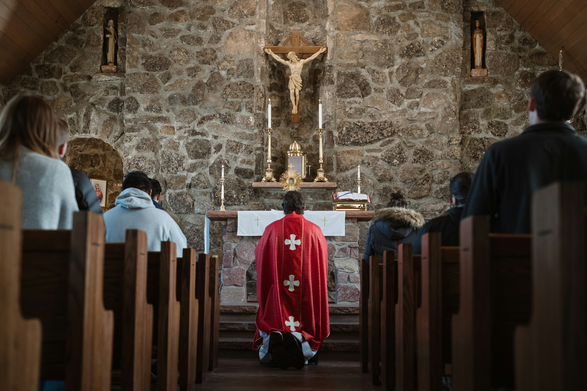

The Beauty and mystery of the Eucharist.
The Eucharist is a profound mystery where the bread and wine become the true body and blood of Christ. Through this sacrament, we are invited into a deeper communion with Jesus, receiving both spiritual nourishment and grace. The Eucharist is not just a symbol but a real encounter with the living Christ, essential to our faith and relationship with God.

Key Aspects of the Eucharist

Jesus’ words affirm the real presence: "This is my body" and "This is my blood."

Church Tradition has upheld the belief in the Eucharist as Christ’s true body and blood.

The Eucharist nourishes the soul and deepens union with Christ.

The Eucharist transforms believers, offering grace and spiritual renewal.